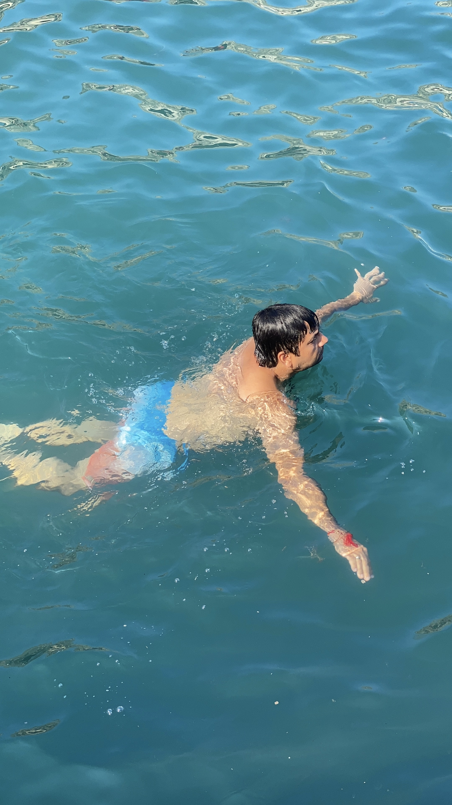

The Maltese sun hits differently. It’s not just bright; it’s an embrace, a warm hug that tells you, "You're exactly where you need to be." Stepping off the plane, the August air was a symphony of heat and the distant promise of turquoise waters. Rohan, my partner in crime and best friend since our university days, had that familiar glint in his eye – the one that says 'adventure awaits'. We'd been talking about a Mediterranean escape for ages, and finally, Malta was our reality.
That first day was a blur of settling in and immediate exploration. There’s something so liberating about finding a spot with a view that instantly makes you forget all your worries. The sheer expanse of the Mediterranean, that impossibly clear blue, just pulls you in. Rohan and I couldn't resist a quick photo to capture our arrival, grinning like kids in a candy store, with the stunning bay stretching out behind us. It felt like a postcard come to life.



We spent our days hopping between secluded coves and lively stretches of coastline. Unlike the sandy beaches I'm used to back home in parts of Europe, Malta's rocky shores offer their own unique charm. It was fascinating to see families and friends spread out on the sun-baked rocks, finding their own little piece of paradise. The atmosphere was always buzzing, filled with laughter and the splash of people diving into the water. Rohan, ever the social butterfly, thrived in this vibrant energy, chatting with locals and fellow travelers alike.
And when the heat truly called for it, there was no resisting the embrace of the sea. Slipping into those cool, crystalline waters was pure bliss. The buoyancy of the Mediterranean just cradles you, and for a few moments, all you can hear is the gentle lapping of waves against the rocks, and perhaps a distant seagull cry. It’s moments like these, weightless and free, that truly etch themselves into your memory.
Evenings were a slower, more reflective pace. We'd find ourselves at charming cafes, often perched on a cliffside, watching the light change over the water. There’s something incredibly simple and profound about sitting with Rohan, a cool drink in hand, talking about everything and nothing. The gentle sea breeze, the warmth of the sun fading, the quiet hum of life around us – it all felt perfectly aligned. Malta isn't just a destination; it's a feeling, a reminder to slow down, soak it all in, and cherish the connections you have. It was a beautiful symphony of European charm and Desi warmth, wrapped in the endless blue of the Med. I can still feel the sun on my skin and the taste of the sea on my lips.